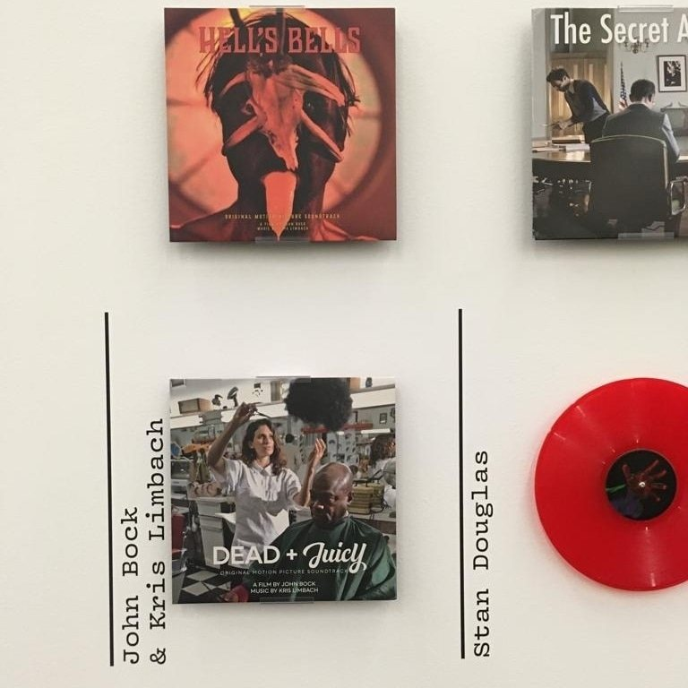

Sound for John Bock
Sound design, scores, performance and studio production for John Bock’s films and installations: a collaboration of almost two decades, spanning film scores, vinyl releases, live performance and museum exhibitions.
- Cowwiddinok (2015)2025 · score and performer · film in the collection of the Berlinische Galerie, shown in Psychonauten (March to August 2025)
- Broken Music Vol. 2, Hamburger Bahnhof, Berlin2023 · Dead & Juicy and Hell’s Bells in 70 Years of Records and Sound Works by Artists
- XQX: Next Quasi Complex2020 · vinyl, Verlag der Buchhandlung Walther König
- Dead & Juicy / Hell’s Bells2018 · film soundtracks on vinyl, Walther König / emitter micro
- Ausstellen des Ausstellens, Staatliche Kunsthalle Baden-Baden2018 · opening concert
- Berlinische Galerie, Berlin2017 · performance, with Lars Eidinger, Bibiana Beglau and Laurenz Leky
- Kunsthalle Rostock2017 · performance

